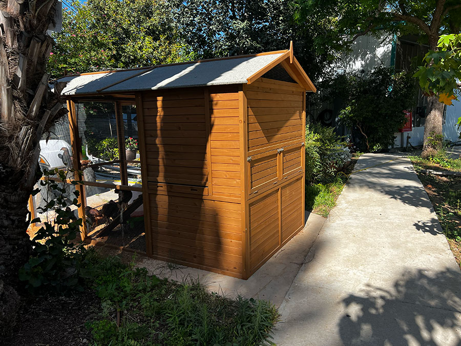
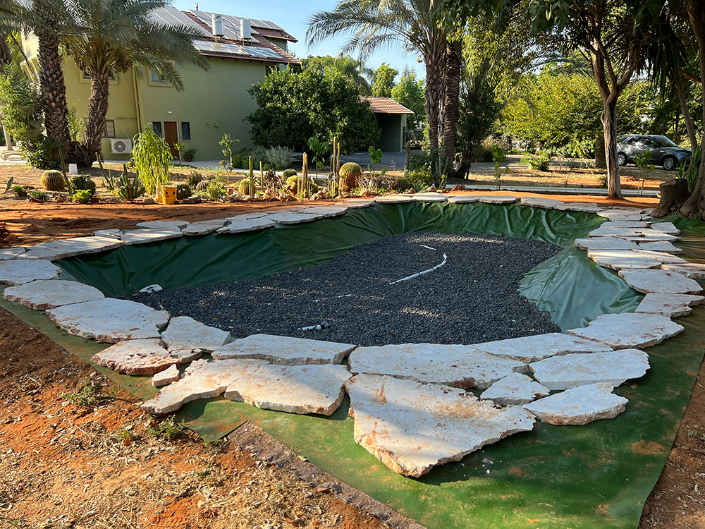
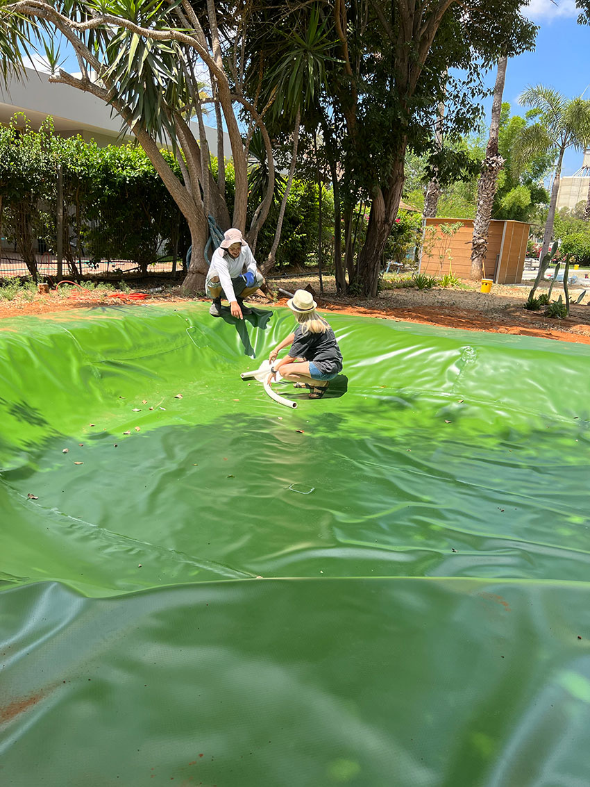
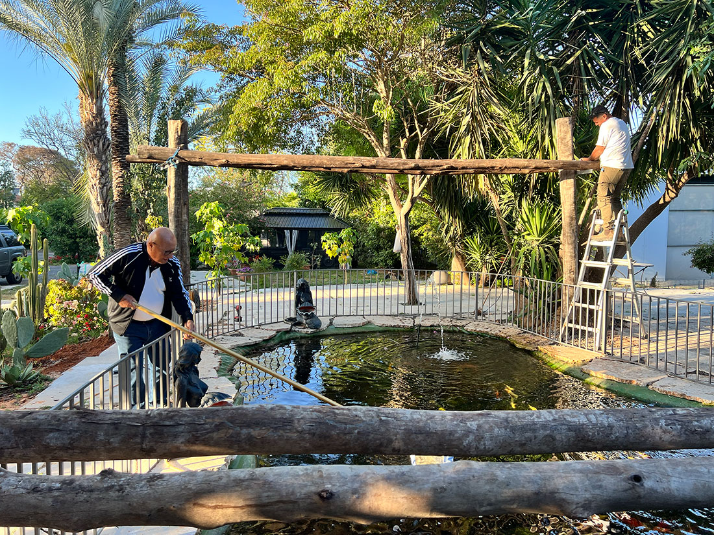
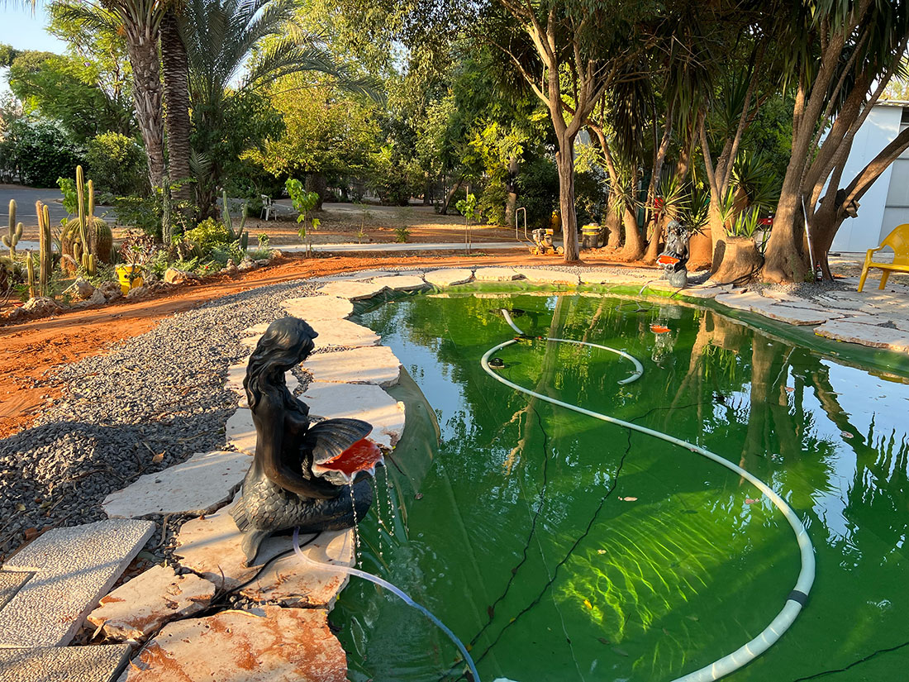
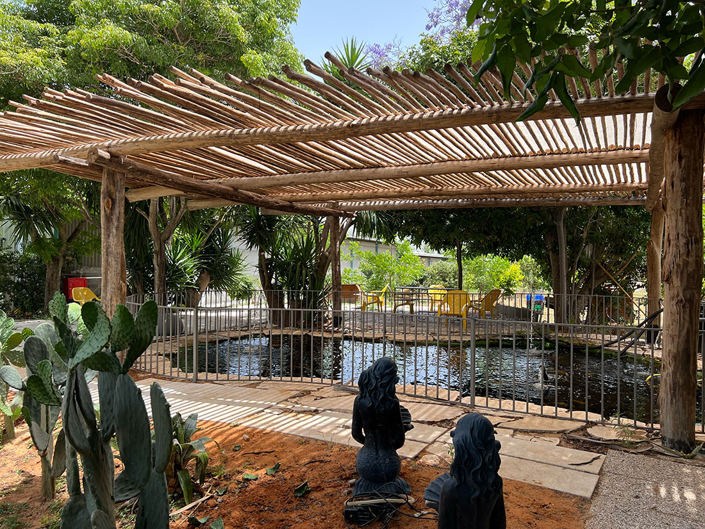
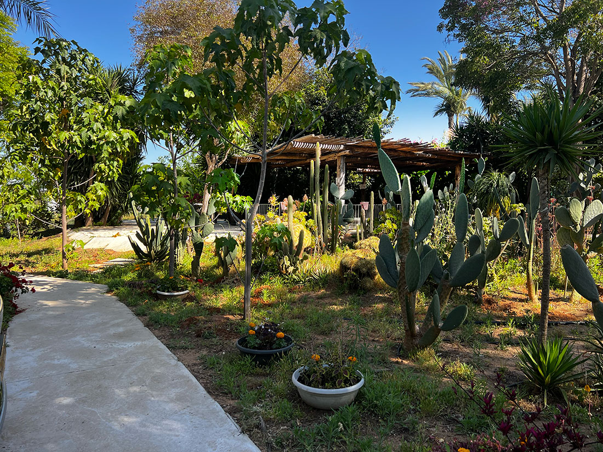

כשיש חזון, גם נחלה גדולה מקבלת סדר
נחלה בכפר הנגיד לאחר רכישה והיוון, בתהליך של שיפוץ ופיתוח שטח רחב. בעל הנחלה הוא איש עם מעוף, מלא עשייה ורעיונות, שמאמין שצבע מנצח.
לפעמים זה מרגיש כמו קוסם עם מטה קסמים: הוא נוגע בפינה, והיא מקבלת חיים. אין אזור שנשאר מאחור - שבילים, פרחים, בריכת שחייה, בריכת דגים, פינת חי, צבים, לול קטן וביצים טריות בכל יום.
מה שמתאים לנחלה אחת לא בהכרח מתאים לאחרת. אבל מכל נחלה אפשר לקבל השראה, חוכמה ואומץ לחשוב רחוק.
הכיכר המרכזית - הלב שמנווט את התנועה במשק
הכיכר והרחבות המרכזיות מייצרות נקודת התמצאות ברורה. הן מאפשרות תנועה נוחה לכל חלקי המשק, מוסיפות צבע, ומחברות בין הבית, החוץ והחיים היומיומיים.


כניסה, שבילים ורמפה לנגישות
בנחלה, נגישות היא לא רק תקן. היא חלק מאיך שחיים את הבית ביום יום. הרמפה, המדרגות, המעקות והשבילים נבנו כך שהמעבר מהבית אל החוץ יהיה ברור, נוח וטבעי.


חיי יום יום במשק - לול, מטילות וצבים
היופי בנחלה הזו הוא שהטבע אינו תפאורה. הוא חלק מהחיים. הלול הקטן סמוך לבית, המטילות נותנות ביצים טריות בכל יום, וגם לצבים יש פינה משלהם.
יש כאן שמחה של בעל נחלה שמממש רעיון ועוד רעיון, ורואים את שביעות הרצון שלו דווקא ליד המקומות הקטנים האלה, שמחזיקים הרבה אופי.



בריכת דגים מוצלת
בריכת הדגים בחצר המשק היא חלק מהאופי של המקום. היא לא רק אלמנט נוי, אלא פינה חיה עם מים, דגים, צל, תנועה ורוגע. ההצללה מעל הבריכה חשובה גם לנראות, גם לאקלים של הפינה וגם לתחושת השהייה סביבה.







בריכת שחייה ואזור אירוח
בריכת השחייה ואזורי הישיבה הופכים את החוץ למרכז חיים. זה לא רק אזור שחייה, אלא מרחב של אירוח, תנועה, מבט, צל, שמש וחיבור לבית.


פנים וחוץ - כשהבית רואה את הנחלה
גם מבפנים, החוץ נוכח. פתחים, חלונות, קמין וחומריות מחברים בין הבית, האור, הנוף והתחושה של המקום.


מה לומדים מנחלה כזו?
שבנחלה אין פתרון אחד שמתאים לכולם. לכל בעל נחלה יש ראייה אחרת, צרכים אחרים, קצב אחר וחלום אחר. אבל כשיש חזון, סדר ויכולת לראות את המרחב כולו, אפשר להפוך שטח גדול למקום חי, נוח, צבעוני ומדויק.